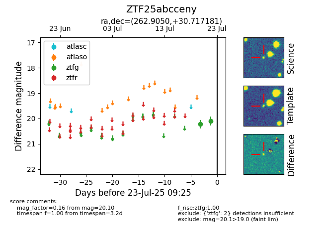

Target ZTF25abcceny at 2025-07-23 12:37, see:
FINK: fink-portal.org/ZTF25abcceny
Lasair: lasair-ztf.lsst.ac.uk/objects/ZTF25abcceny
ALeRCE: alerce.online/object/ZTF25abcceny
alt names
ZTF25abcceny (ztf,fink)
coordinates:
equatorial (ra, dec) = (262.9050,+30.71718)
galactic (l, b) = (54.5859,+29.60598)
photometry
last ztfg=20.10
2 ztfg detections
